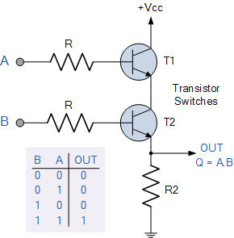

2 I/P Transistor AND Gate

PIN Discription IC-7408

The AND gate is a basic digital logic gate that implements logical conjunction - it behaves according to the truth table to the right. A HIGH output (1) results only if all the inputs to the AND gate are HIGH (1). If none or not all inputs to the AND gate are HIGH, LOW output results. The function can be extended to any number of inputs.
| A | B | A AND B |
|---|